Choosing α adaptively¶
The module AdaptiveAlpha.py can be used to choose the optimal value
of the anisotropy parameter α, with respect to a given optimality
criterion and a given family of images.
Currently, the following criteria are implemented:
- the
asymptotic approximation rate(AAR), - the
mean approximation error(MAE), - the
thresholding denoising performance(TDP).
In the following, these different criteria are described in greater detail. Finally, we document the auxiliary functions used to implement the criteria.
Documentation of the optimality criteria¶
-
AdaptiveAlpha.optimize_AAR(image_paths, num_scales, alpha_res, threshold_mode='hard', num_x_values=50, base=1.25, show_plot=True, shearlet_args=None)¶ Given a set of images 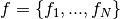, this function uses a grid search to determine the optimal value of the parameter alpha of an alpha-shearlet system by comparing the asymptotic approximation rates obtained with different alpha-shearlet systems for the given set of images.
Precisely, the asymptotic approximation rate for a set of images is calculated as follows:
- A sequence of threshhold coefficients 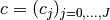 of the
form
 is determined, where 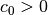,
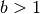.
is determined, where 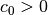,
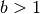. - For each of the input images
 , each alpha and each
of the threshold parameters 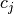, the approximation error
, each alpha and each
of the threshold parameters 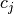, the approximation error
 is calculated. Here, 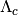 is a
thresholding operator with cut-off (or threshold)
is calculated. Here, 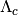 is a
thresholding operator with cut-off (or threshold)  ,
,
 is the alpha-shearlet transform and
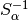
the (pseudo)-inverse of the alpha-shearlet transform.
All images are normalized to satisfy
is the alpha-shearlet transform and
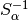
the (pseudo)-inverse of the alpha-shearlet transform.
All images are normalized to satisfy  .
. - The mean of the approximation errors with respect to the image set is taken: 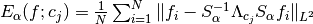.
- For each value of alpha, the logarithm of 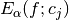,
as a function of
 , is considered as a time series which is
partitioned into almost linear parts using
piecewise linear times series segmentation; see
, is considered as a time series which is
partitioned into almost linear parts using
piecewise linear times series segmentation; see
common_linear_segmentation()for more details and the techincal report for motivation. - The value of alpha yielding the smallest slope (i.e., the fastest error decay) in the last of these almost linear parts is considered as the optimum.
Many parameters (number of different alpha values, number of threshold parameters, etc.) of the procedure described above can be customized using the parameters of
optimize_AAR(). These parameters are described in the following list.Required parameters
Parameters: - image_paths (list) –
This parameter determines the set of images to be considered. Precisely,
image_pathsshould be a list of strings, where each string is the path of an image, i.e., of a.pngor a.npyfile.All of these images/numpy arrays have to be two-dimensional and all of the same dimension. Furthermore,
image_pathsshould contain at least one path. - num_scales (int) – Number of scales which the different alpha-shearlet systems should use.
- alpha_res (float) –
This parameter determines the resolution (or density) which is used by the grid search to determine the optimal value of alpha. The different alpha values are taken uniformly over the interval [0,1], with sampling density
alpha_res.Note
If one wants to determine the number of different alpha values, this can be done by passing
alpha_res = 1 / (num_alphas - 1), wherenum_alphasis the desired number of different alpha values.
Keyword parameters
Parameters: - threshold_mode (string) –
Either
'hard'or'soft'. This parameter determines whether the hard thresholding operator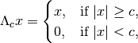
or the soft thresholding operator

is used for thresholding the alpha-shearlet coefficients.
- num_x_values (int) – Number of different threshold parameters that are used.
Precisely, the considered thresholds are 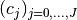,
with
 , where
, where
 and where the base
and where the base bis determined by the parameterbase. Finally, is choosen as the maximum value of
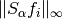 over all images and
all values of alpha.
is choosen as the maximum value of
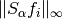 over all images and
all values of alpha. - base (float) – Value of the basis for the calculation of the threshold
parameters . See
num_x_valuesfor a more thorough explanation. - show_plot (bool) – If this paramter is set to
True, executingoptimize_AAR()will also display a log-log plot of , together
with the associated partition into almost linear parts.
, together
with the associated partition into almost linear parts. - shearlet_args (dict) –
This argument can be used to determine the properties of the employed alpha-shearlet systems. A typical example of this argument is:
{'subsampled' : False, 'real' : True, 'verbose' : False}
where the chosen values of
TrueorFalsecan of course differ.Note
The parameter
shearlet_argsis just passed as a set of keyword arguments to the constructor of the classAlphaShearletTransform. See the documentation of that class for more details, in particular for the respective default values.
Return value
Returns: The function returns that value of alpha (as a float) which yields the smallest asymptotic approximation rate, i.e., the fastest asymptotic error-decay, for the given set of images.- A sequence of threshhold coefficients 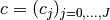 of the
form
-
AdaptiveAlpha.optimize_MAE(image_paths, num_scales, alpha_res, threshold_mode='hard', num_x_values=50, max_value=None, show_plot=True, shearlet_args=None)¶ Given a set of images , this function uses a grid search to determine the optimal value of the parameter alpha of an alpha-shearlet system by comparing the mean approximation error obtained with different alpha-shearlet systems for the given set of images.
Precisely, the mean approximation error for a set of images is calculated as follows:
- A sequence of threshold coefficients
 is
determined. In fact, the are chosen to be uniformly
distributed in an interval 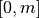, where the maximal value
is
determined. In fact, the are chosen to be uniformly
distributed in an interval 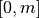, where the maximal value
mis determined by the parametermax_value. - For each of the input images , each alpha and each
of the threshold parameters , the approximation error
 is calculated. Here, is the
(hard) thresholding operator with cut-off (or threshold) ,
is the alpha-shearlet transform and
the (pseudo)-inverse of the alpha-shearlet
transform. All images are normalized so that .
is calculated. Here, is the
(hard) thresholding operator with cut-off (or threshold) ,
is the alpha-shearlet transform and
the (pseudo)-inverse of the alpha-shearlet
transform. All images are normalized so that . - The mean of the approximation errors with respect to the image set and with respect to the threshold parameters is taken: 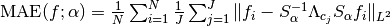.
- The value of alpha which yields the smallest value for 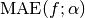 is considered as the optimum.
Many parameters (number of different alpha values, number of threshold parameters, etc.) of the procedure described above can be customized using the parameters of
optimize_MAE(). These are described in the following list.Required parameters
Parameters: - image_paths (list) –
This parameter determines the set of images to be considered. Precisely,
image_pathsshould be a list of strings, where each string is the path of an image, i.e., of a.pngor a.npyfile.All of these images/numpy arrays have to be two-dimensional and all of the same dimension. Furthermore,
image_pathsshould contain at least one path. - num_scales (int) – Number of scales which the different alpha-shearlet systems should use.
- alpha_res (float) –
This parameter determines the resolution (or density) which is used by the grid search to determine the optimal value of alpha. The different alpha values are taken uniformly over the interval [0,1], with sampling density
alpha_res.Note
If one wants to determine the number of different alpha values, this can be done by passing
alpha_res = 1 / (num_alphas - 1), wherenum_alphasis the desired number of different alpha values.
Keyword parameters
Parameters: - threshold_mode (string) –
Either
'hard'or'soft'. This parameter determines whether the hard thresholding operator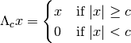
or the soft thresholding operator
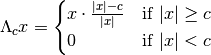
is applied to each of the alpha-shearlet coefficients.
- num_x_values (int) – Number of different threshold parameters that are used. These are taken equally distributed from 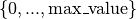.
- max_value (float) –
Maximum value of the threshold parameter.
If the default value (
None) is passed,max_valueis taken as the largest absolute value of all alpha-shearlet coefficients (maximizing over all images and all considered values of alpha) which do not belong to the low-pass part. The reason for this choice is that ifcis chosen greater than this threshold, then is independent of
is independent of  .
. - show_plot (bool) – If this parameter is set to
True, executingoptimize_MAE()will display a plot of the error curves (jointly for all considered alpha values) as a function of
(jointly for all considered alpha values) as a function of c. - shearlet_args (dict) –
This argument can be used to determine the properties of the employed alpha-shearlet systems. A typical example of this argument is:
{'subsampled' : False, 'real' : True, 'verbose' : False}
where the chosen values of
TrueorFalsecan of course differ.Note
The parameter
shearlet_argsis just passed as a set of keyword arguments to the constructor of the classAlphaShearletTransform. See the documentation of that class for more details, in particular for the respective default values.
Return value
Returns: The function return the value of alpha (as a float) which yields the smallest value of for the given set of images.- A sequence of threshold coefficients
-
AdaptiveAlpha.optimize_denoising(image_paths, num_scales, alpha_res, num_noise_lvls, noise_min=0.02, noise_max=0.4, sample_size=None, thresh_multiplier=None, show_plot=True, shearlet_args=None)¶ Given a set of images, this function uses a grid search to determine the optimal value of the parameter alpha of an alpha-shearlet system by comparing the performance of different alpha-shearlet systems for certain denoising experiments using the given set of images.
Precisely, the denoising performance is measured as follows: For each of the input images
, the following operations are
performed:Gaussian noise
 with standard
deviation
with standard
deviation  is added to to obtain a
distorted image 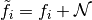.
is added to to obtain a
distorted image 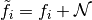.Note
Each
is actually a normalized version of an
input image, i.e., 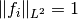. This normalization
is used to ensure that the standard deviation is
comparable to the image itself.The alpha-shearlet transform 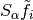 of 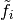 is computed.
The alpha-shearlet coefficients are thresholded, yielding
 , where is the
hard thresholding operator with cut-off (or threshold) c.
, where is the
hard thresholding operator with cut-off (or threshold) c.The precise value of the threshold c is actually noise- and scale-dependent. See below for a more detailed description.
The thresholded coefficients are used to reconstruct a denoised version
 of .
Precisely,
of .
Precisely,  ,
where is the (pseudo)-inverse of .
,
where is the (pseudo)-inverse of .The error 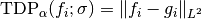 is computed to measure the suitability of the alpha-shearlet system for denoising the given image
.
This procedure is repeated for all images in the given set and for a number of different noise levels
 , where the noise level is
proprtional to the standard deviation of the gaussian noise
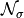. In total, the suitability of the alpha-shearlet
system for denoising the given set of images is measured by taking the mean
over all given images and all considered noise levels, i.e., by
, where the noise level is
proprtional to the standard deviation of the gaussian noise
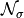. In total, the suitability of the alpha-shearlet
system for denoising the given set of images is measured by taking the mean
over all given images and all considered noise levels, i.e., by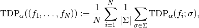
where
 denotes the set of all considered standard deviations.
denotes the set of all considered standard deviations.Many parameters (number of different alpha values, number of different noise levels, etc.) of the procedure described above can be customized using the parameters of
optimize_denoising(). These are described in the following list.Required Parameters
Parameters: - image_paths (list) –
This parameter determines the set of images to be considered. Precisely,
image_pathsshould be a list of strings, where each string is the path of an image, i.e., of a.pngor a.npyfile.All of these images/numpy arrays have to be two-dimensional and all of the same dimension. Furthermore,
image_pathsshould contain at least one path. - num_scales (int) – Number of scales which the different alpha-shearlet systems should use.
- alpha_res (float) –
This parameter determines the resolution (or density) which is used by the grid search to determine the optimal value of alpha. The different alpha values are taken uniformly over the interval [0,1], with sampling density
alpha_res.Note
If one wants to determine the number of different alpha values, this can be done by passing
alpha_res = 1 / (num_alphas - 1), wherenum_alphasis the desired number of different alpha values. - num_noise_lvls (int) – Number of different noise levels that are used. These are taken equally
distributed from the interval
[noise_min, ..., noise_max].
Keyword parameters
Parameters: - noise_min (float) –
Lower bound for the range from which the different noise levels are taken. Default value is
 .
.Note
The standard deviation
of the noise and the
noise level are related by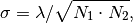
where 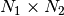 is the common dimension of all considered images. This ensures

so that 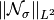 is typically about
. Since we are considering normalized
images, is thus a good measure for the noise
to signal ratio. - noise_max (float) – Upper limit for the range from which the different noise levels are
taken. Default value is
0.4. Seenoise_minfor more details. - sample_size (int) –
This parameter can be used to test whether generalization occurs, i.e., if the optimal value of alpha learned on a small subset (the training set) of the data yields the same value as for the whole data set.
Precisely, if
sample_sizeis passed a value different from the default (None), thenoptimize_denoisingalso determines the optimal value of alpha for a randomly chosen subset of the given images. This randomly chosen subset hassample_sizeelements, i.e.,sample_sizedetermines the size of the training set. - thresh_multiplier (list) –
This parameter determines how the threshold
cfor the hard thresholding operation is determined as a function of the noise level and of the scale.Precisely, the coefficients on scale
iare thresholded with cutoff valuesigma * thresh_multiplier[i+1]. Here, the low-pass hasi = -1, while the other scales “begin counting” ati = 0. Furthermore,sigmais the standard deviation of each entry of the noise.If the default value (
None) is used, then thresh_multiplier is chosen as[3] * num_scales + [4], so that all scales but the highest use a cutoff of3 * sigma, while the highest scale uses4 * sigma.Note
One can show (since we use the normalized alpha-shearlet coefficients, i.e., with 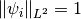) that each coefficient
 is normally
distributed with standard deviation . Hence, choosing
the threshold as a multiple of
is normally
distributed with standard deviation . Hence, choosing
the threshold as a multiple of sigmais natural. - show_plot (bool) –
If this parameter is set to
True, executingoptimize_denoising()will also display a plot of the average denoising error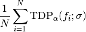
as a function of the noise level 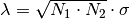 in one common plot for all values of alpha.
- shearlet_args (dict) –
This argument can be used to determine the properties of the employed alpha-shearlet systems. A typical example of this argument is:
{'subsampled' : False, 'real' : True, 'verbose' : False}
where the chosen values of
TrueorFalsecan of course differ.Note
The parameter
shearlet_argsis just passed as a set of keyword arguments to the constructor of the classAlphaShearletTransform. See the documentation of that class for more details, in particular for the respective default values.
Return value
Returns: If sample_sizeisNone, this function returns a singlefloat, namely the value of alpha yielding the best denoising performance on the given images.If
sample_sizeis notNone, this function returns a tupletof two floats, wheret[0]is the value of alpha yielding the best denoising performance on all of the given images, whilet[1]is the value of alpha yielding the best denoising performance on the randomly selected training set of sizesample_size.
Documentation of auxiliary functions¶
-
AdaptiveAlpha.common_linear_segmentation(list_of_ys, max_error, direction)¶ This function performs a sliding window piecewise linear time series segmentation, based on a certain Stackoverflow post, simultaneously over a given set of time series.
The parameter
list_of_yscontains the set of time series, i.e., it is of the form 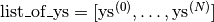, where each element 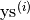 is itself a list with real values![\mathrm{ys}^{(i)} = [y_0^{(i)}, \dots, y_{n-1}^{(i)}]](_images/math/354498e0a4d4bf8f81903c4df74f2ab67a3f1ec3.png) ,
representing a time series. Note that the length
,
representing a time series. Note that the length nof the time series should be independent ofi. The function then computes a sequence 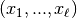 of break points such that between each pair of consecutive break points, each of the sequences is “almost linear”.Required parameters
Parameters: - list_of_ys (list) – List of time series (of common length) which will be simultaneously
split into “almost linear” parts using a common segmentation.
For more details on the form of
list_of_ys, see the description from above. - max_error (float) –
A positive real number. The interval
![[0, \dots, n]](_images/math/a7adbd352371dc8ef87db026d737bb2b4e60206b.png) ,
where n is the common length of all time series, is split into
a number of intervals (segments) such that on each segment and for
each of the time series
,
where n is the common length of all time series, is split into
a number of intervals (segments) such that on each segment and for
each of the time series ys, the best (affine)-linear approximation (in the sense of linear regression) to the time seriesysitself has a uniform error of at mostmax_error * (max(ys) - min(ys)).Hence, for a given value of
max_error, the allowed tolerance is still weighted with the actual spread of the values in each of the time series. This ensures that a segmentation of a scaled version of the given time series will result in the same segmentation as for the original time series. - direction (string) –
Either
'forward'or'reversed'.For ordinary sliding window piecewise linear segmentation, one starts at the beginning of the time series (i.e., at 0) and enlarges the current segment until the criterion described above (see
max_error) fails; then one starts the next segment. Ifdirectionis'forward', this is exactly what this function does. Ifdirectionis'reversed', then we start at the end of the time series instead of at the beginning.
Return values
Returns: A tuple (breaks, slopes), wherebreaksis alistof nonnegative integers which is of the form 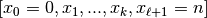. This list encode the different “common almost linear segments” found by the function. Precisely, the i-th segment is given by .
.Note
This interval is open on the right.
slopesis alistof reals, whereslopes[i]is the slope of the best (affine)-linear approximation to the valuesyson the i-th segment.
- list_of_ys (list) – List of time series (of common length) which will be simultaneously
split into “almost linear” parts using a common segmentation.
For more details on the form of
-
AdaptiveAlpha.flexible_linear_regression(xs, ys)¶ Given sequences
xsandysof values 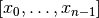 and 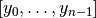, this function computes the best (affine)-linear approximation to the sequence 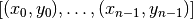 and returns the y-intercept and slope of this best linear approximation.Required parameters
Parameters: - xs (list) – List of real values
![[x_0, \dots, x_{n-1}]](_images/math/9d91c552fae156b7708fa10c9bcb54e9aff258a0.png) which determine
the x-values of the sequence of points on which the linear regression
should be performed.
which determine
the x-values of the sequence of points on which the linear regression
should be performed. - ys (list) –
List of real values which determine the y-values of the sequence of points on which the linear regression should be performed.
Note
The lists
xsandysare required to have the same length, which should at least be 2.
Return values
Returns: A tuple (y_intercept, slope), wherey_interceptis the y-intercept (afloat) of the best (affine)-linear approximation to the given points.slopeis the slope (afloat) of the best (affine)-linear approximation to the given points.
In total, the best (affine)-linear approximation to the given points is given by 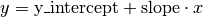.
- xs (list) – List of real values
-
AdaptiveAlpha.linear_regression(ys)¶ Given a sequence
ysof values , which are interpreted as the -coordinates of
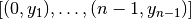, this function
computes the best (affine)-linear approximation and returns the y-intercept
and slope of the best (affine)-linear approximation, as well as the
sequence of errors.
-coordinates of
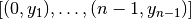, this function
computes the best (affine)-linear approximation and returns the y-intercept
and slope of the best (affine)-linear approximation, as well as the
sequence of errors.Note
This function is essentially a more optimized version of the call
flexible_linear_regression(range(len(ys)), ys). The main difference is thatlinear_regressionalso returns the sequence of errors.Required Parameters
Parameters: ys (list) – List of real values interpreted as for the linear regression on 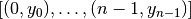, where 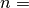 len(ys).Return values
Returns: A tuple (errors, y_intercept, slope), whereerrorsis alistof the differences between the given values (ys) and the values of the linear regression at -values 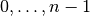
with
-values 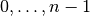
with 
len(ys).y_interceptis the y-intercept (afloat) of the best (affine)-linear approximation.slopeis the slope (afloat) of the best (affine)-linear approximation.
In total, the best (affine)-linear approximation to the sequence of points is given by .
-
AdaptiveAlpha.log_plot_linear_segmentations(xs, ys_list, max_error, labels, direction='reversed', colors=None)¶ Given a set of time series (in
ys_list, with corresponding time stamps given byxs), this function plots these time series in a log-log plot. In addition to the time series itself, the function also computes a segmentation on the time axis such that on each segment, each of the given time series is almost linear (in the log-log plot). On each of these segments, also the best linear approximation (in the log-log plot) to each of the time series is plotted.Parameters
Parameters: - ys_list (list) – A list of time series with positive values, i.e., each element of
ys_listshould be a list of positive real numbers and all elements ofys_listshould have the same common length. - xs (list) –
A list of positive x-values (“time stamps”) associated to the time series in
ys_list. In other words, for each time seriesysinys_list,xs[i]should be the x-value corresponding to the y-valueys[i]. In particular,xsshould have the same length as every element ofys_list.Warning
It is implicitly assumed that
xsis of the formxs = [x_0 * b**i for i in range(len(xs))], for somex_0 >0and some0 < b != 1, since the logarithmic time series are segmented usingcommon_linear_segmentation(). This only yields the same result as a piecewise linear time series segmentation of the time series in a log-log plot if the x-values inxsbehave linearly in the log-log plot. This is equivalent to the stated form ofxs. - max_error (float) –
A positive number which determines the tolerance for splitting the x-axis into several segments on each of which all of the time series should be “almost linear” (in a log-log plot).
Precisely, the segmentation is determined by calling
common_linear_segmentation(log_ys_list, max_error, direction), wherelog_ys_list = [np.log10(ys) for ys in ys_list]. - labels (list) – This list (of strings) determines the label used in the plot for each
of the time series in
ys_list. In particular, the length oflabelsshould be the same as that ofys_list. - direction (string) –
Either
'reversed'or'forward'. This parameter determines whether the piecewise linear time series segmentation should be started at the start of the time series (in case ofdirection = 'forward') or at the end of the time series (fordirection = 'reversed'); see alsocommon_linear_segmentation().Since this function is mainly to be used for plotting approximation rate curves and since these tend to be “more linear” at the end and since the important part for the asymptotic approximation rate is at the end of the time series,
'reversed'is the default value. - colors (list) –
A list of string which determines the color to be used for plotting each of the time series. Once the list of colors is exhausted, it is traversed again at the beginning.
If the default value (
None) is used, a default list of colors is used.
Return value
Returns: Nothing. Note that the resulting plot is not immediately shown, so that changes to the plot can be made. Call matplotlib.pyplot.show()to display the plot.- ys_list (list) – A list of time series with positive values, i.e., each element of
-
AdaptiveAlpha.optimize_asymptotic_approx_rate(error_sequences, alphas, mode='longest', max_number_of_segments=4, direction='reverse')¶ Required parameters
Parameters: Keyword parameters
Parameters: - max_number_of_segments (int) – An integer >= 2 which determines in how many linear parts each error sequence is split.
- mode (string) – Either ‘longest’ or ‘last’.In case of ‘longest’, the function looks for the longest(!) ‘almost linear’ part in each of the error sequences and compares the respective slopes. In case of ‘last’, the function looks for the last(!) ‘almost linear’ part (of length >= 1/(2 * max_number_of_segments) * length of the whole sequence) in each of the error sequences and compares the respective slopes.
- direction (string) –
Either ‘reverse’ or ‘forward’. This parameter influences whether the linear segmentation starts at the beginning or at the end of the sequence.
For things like approximation errors, the behaviour is usually “more linear” at the end than at the beginning, so that in order to pick up this behaviour, it is mostly better to start at the end. Hence, ‘reverse’ is the default value.
Return values
Returns: A tuple (i, epsilon), where